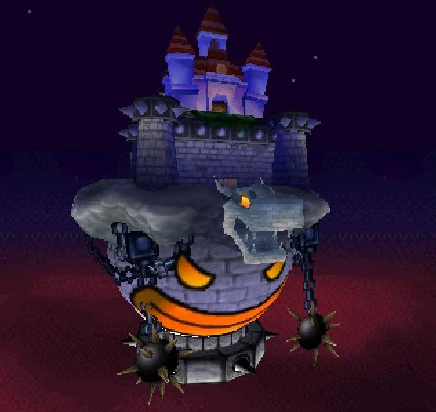
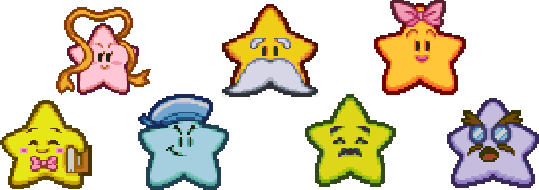

So what's the big idea?
Paper Mario begins as most Mario games do. Bowser has decided to make off with Princess Peach and it's up to Mario to save her! This time however the stakes have been raised quite a bit. Some would say to astronomical proportions! For starters Bowser wasn't satisfied just taking the princess, he took her whole dang castle to boot! Bowser interrupts a party Princess Peach is throwing by having his castle float underneath hers and take the whole thing to space! Mario manages to stay in the castle during these events so Bowser's little joy-ride is sure to come to a quick end! Bowser has a trick up his sleeve however. He's stolen the Star Rod from Star Haven and imbued himself with unimaginable power! Mario is summarily squashed and thrown from space back down to the Mushroom Kingdom...
In order to save the princess and the Mushroom Kingdom Mario has to take back the Star Rod from Bowser! It's not as easy as just walking up and trying again though, he is in space. To tackle Bowser Mario has to save the seven Star Spirits scattered throughout the land! In order to save them Mario will have to dredge through deserts, foray through forests, and go to the farthest coldest corners! Bowser's minions won't make it easy either, with large barricades of minions headed of by a unique personable boss in each area! As you go save the Star Spirits they will add their power to yours giving you special abiliites to use in battle! It's up to Mario to save the Star Spirits and defeat Bowser!
